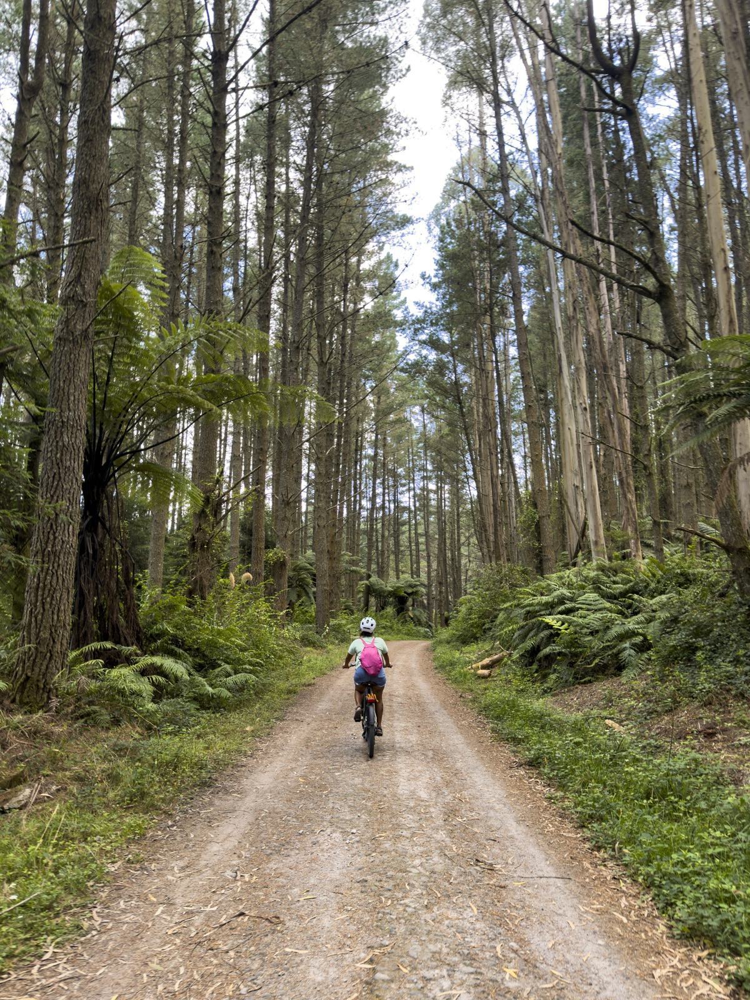
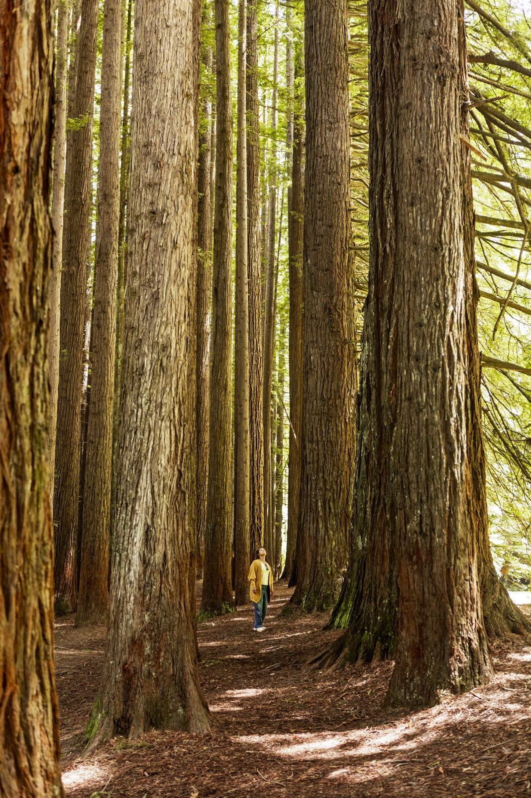
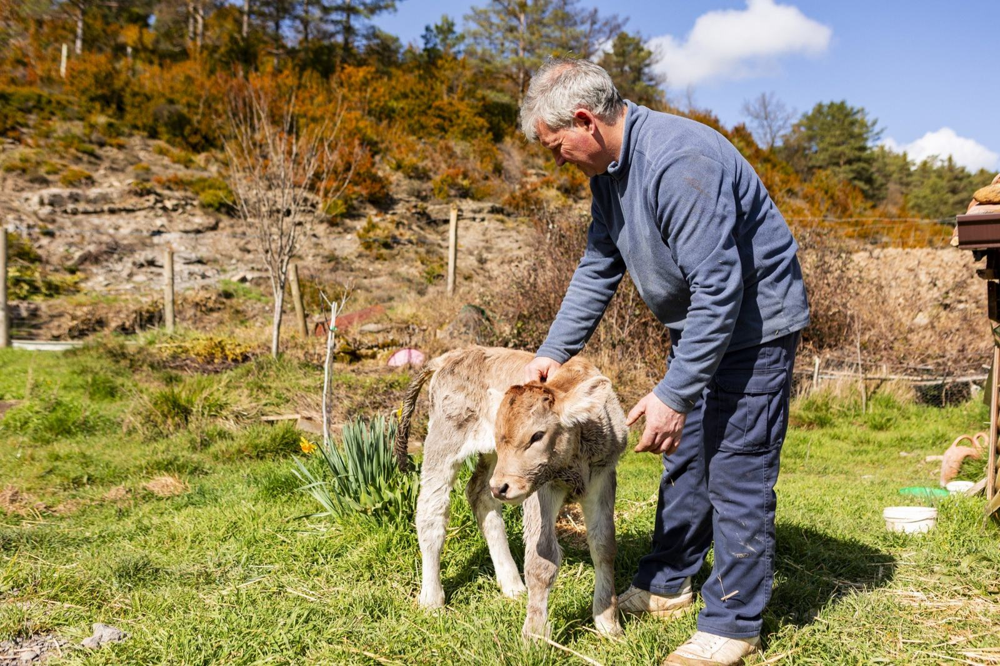
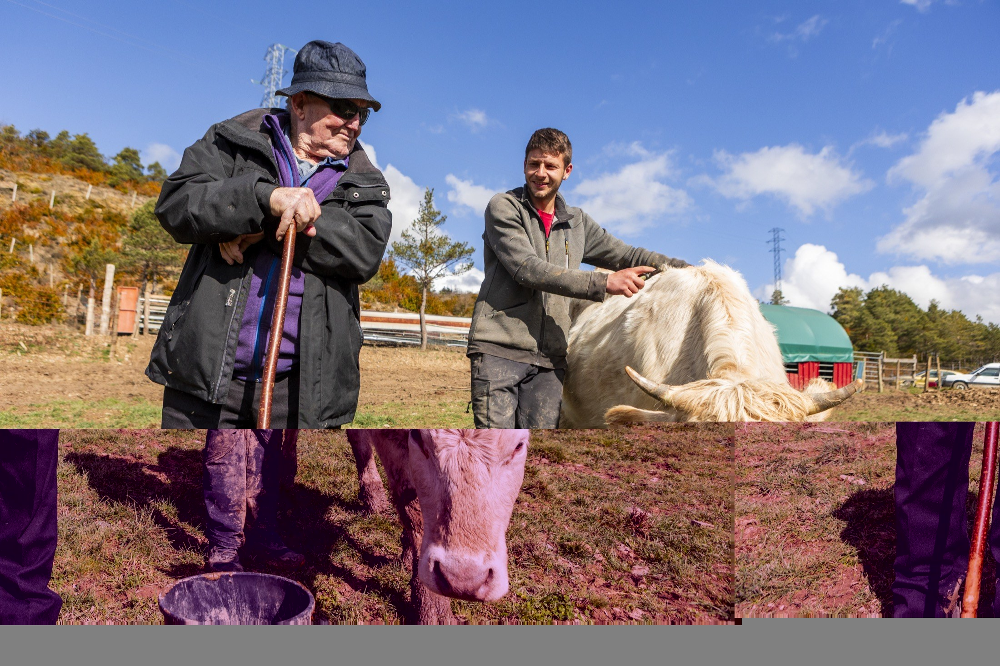

EL CAMINO
La ruta y lo que la rodea
El Camino de la Pedronía y los recorridos que conectan naturaleza, patrimonio y experiencias locales.
 PROPUESTA INDEPENDIENTE · JUAN AIZPURU
PROPUESTA INDEPENDIENTE · JUAN AIZPURU
FOTOGRAFÍA Y VÍDEO · UNA PROPUESTA PARA PADRÓN
Imágenes nuevas para contar los caminos, los sabores y las personas que dan vida a Padrón durante todo el año.
Descubrir la propuestaLA IDEA
Quien llega a Padrón puede seguir descubriendo sus rutas, su patrimonio, su gastronomía y a las personas que mantienen vivo el territorio.
Mi propuesta es crear fotografía y vídeo en Padrón para ayudar a vuestro equipo a mostrar esas experiencias y animar a los visitantes a quedarse y descubrir más.
Las imágenes de esta página pertenecen a mi archivo y muestran el estilo de trabajo. La producción se realizaría en Padrón y su entorno.
UNA PRODUCCIÓN PENSADA PARA PADRÓN
Una propuesta flexible, adaptada a las prioridades y al calendario de vuestro equipo.

El Camino de la Pedronía y los recorridos que conectan naturaleza, patrimonio y experiencias locales.

La ruta del pimiento de Herbón, los productores, los mercados y la cocina que identifica el territorio.

Los paseos, la cultura y los espacios naturales que invitan a conocer Padrón durante todo el año.

UNA MIRADA CERCANA
Me interesa trabajar junto a guías, productores y colaboradores locales. Son ellos quienes conocen los detalles y las historias que pueden dar profundidad a la promoción del destino.
Soy Juan Aizpuru, fotógrafo y realizador. Trabajo con un equipo profesional y puedo adaptar el tiempo de producción a lo que el proyecto necesite.
Conocer mi trabajoEL RESULTADO
Fotografía y vídeo que podáis utilizar en vuestra web, redes, acciones promocionales y otros canales acordados.
También podemos desarrollar una campaña con vosotros, definiendo juntos los temas, las localizaciones y los usos.
El alcance y la licencia de uso se acuerdan según las necesidades del proyecto. Juan Aizpuru conserva la autoría y la propiedad del material.
FITUR 2027 · MADRID
Me gustaría conoceros en FITUR y hablar de vuestras prioridades para encontrar una propuesta útil para vuestro equipo.
Hablemos en FITUR